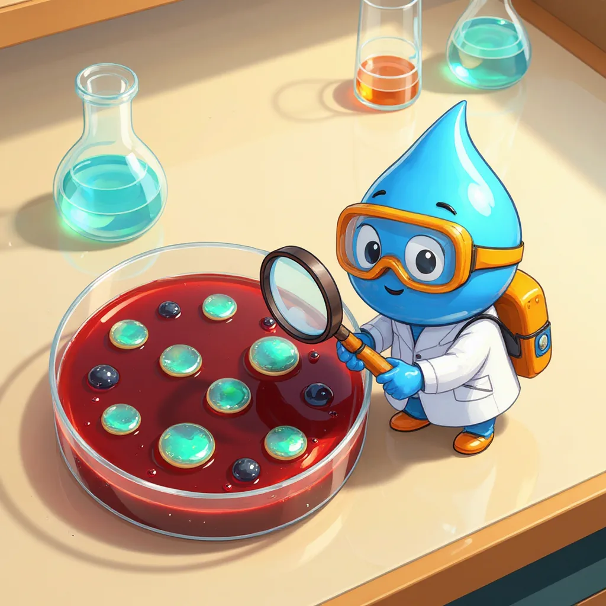

Sección 5 · Parámetro de la norma
Coliformes y E. coli
Buscar microbios que no se ven.
¿Qué son los coliformes?
Para empezar, los coliformes son un grupo de bacterias que viven en el suelo, en las plantas y en el intestino de las personas y los animales. Entre ellos está Escherichia coli, o E. coli, que vive casi solo en el intestino; por eso, encontrarla en el agua prueba que el agua tuvo contacto con heces. Además, donde hay E. coli pueden estar microbios que causan diarrea. Por esta razón, la norma exige que no haya ni una en 100 mL.

Por otra parte, se miden con el método de filtración por membrana. Se hacen pasar 100 mL de agua por un filtro con poros tan pequeños, de 0,45 micrómetros, que las bacterias quedan atrapadas. Luego, el filtro se coloca sobre un alimento especial, llamado medio de cultivo, y se incuba 24 horas a unos 35 °C. Así, cada bacteria se multiplica hasta formar un puntito visible, llamado colonia, que se puede contar.
| Unidad | Método estándar | Qué dice la norma |
|---|---|---|
| UFC/100 mL (unidades formadoras de colonias) | Filtración por membrana (SM 9222) | Resolución 2115 de 2007: 0 UFC/100 mL de coliformes totales y 0 de E. coli. |
Laboratorio virtual: filtración por membrana
Sigue los pasos con el botón azul.
Calculadora de colonias
Si el agua está muy sucia, se filtran solo 10 mL para poder contar las colonias.
- Se cuentan 12 colonias en 10 mL.
- UFC/100 mL = 12 × 100 ÷ 10 = 120.
Mini-reto
Al filtrar 100 mL de agua de la llave aparecen 2 colonias de E. coli. ¿Se puede beber sin tratarla?